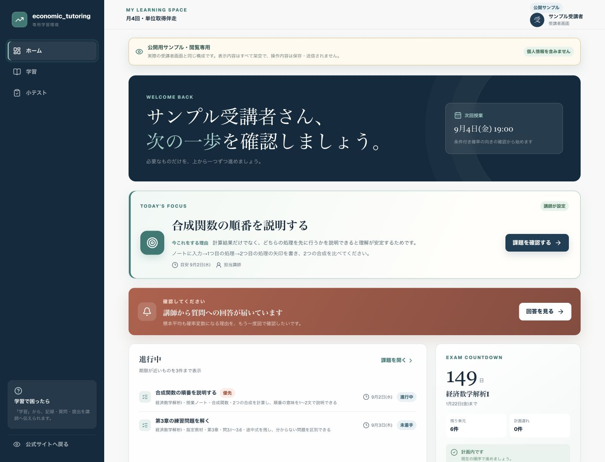
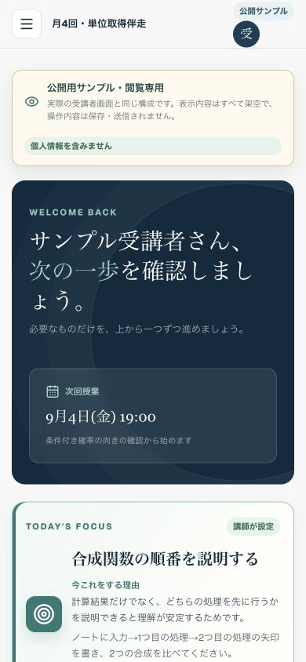
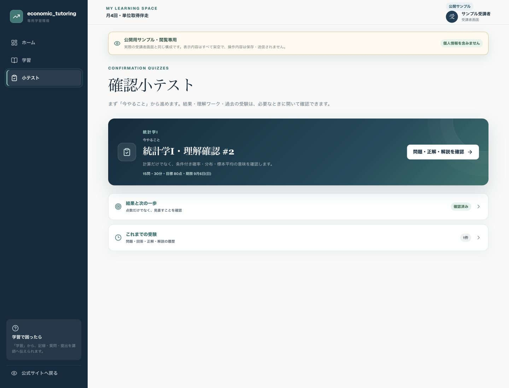

次に何をするか分からない
授業後の復習や課題が曖昧で、取りかかるまでに時間がかかる。
LEARNING SUPPORT BETWEEN LESSONS
授業で決めたことを、課題・提出・質問・確認小テスト・理解ワークへつなげ、同じ担当講師が内容を確認して次回授業へ戻します。履修済み範囲の復習、後期への橋渡し、未習範囲の先取りは混同せず、目的に合わせて扱います。
掲載画面は公開サンプルから取得した閲覧専用画面です。表示内容はすべて架空で、個人情報を含みません。

BETWEEN LESSONS
問題は意欲だけではありません。次の行動や相談先が曖昧なままだと、つまずきが試験直前まで見えにくくなります。
授業後の復習や課題が曖昧で、取りかかるまでに時間がかかる。
メッセージや紙に情報が散らばり、学習の流れを振り返りにくい。
本人が困っていても表面化せず、試験前になって苦手が見つかる。
前回以降の行動が共有されず、授業時間を状況確認に使ってしまう。
HOW IT WORKS
計画表を置いて終わりではありません。実際の取り組みと確認結果を、同じ担当講師が次回授業へ戻します。
教材・ページ・問題番号・期限まで、次にすることを具体化。
課題、提出、質問、学習記録を一か所に集める。
必要に応じて小テスト、理解ワーク、別形式の復習に取り組む。
正誤だけでなく、考え方と残ったつまずきを確認する。
確認した内容から、次の説明・課題・復習の優先順位を決める。
細かく監視するためではなく、止まった地点を早めに見つけ、次にやることと次回授業を具体化するための仕組みです。
LEARNING CHECK REPORT
概念の意味、公式を使える条件、結果の解釈まで確認します。正誤だけでなく、どこで考え方が分かれたか、解説後に何が残ったかを整理し、必要に応じて理解ワークや別形式の再確認へ進みます。
まだ確認できていない状態を、0点や苦手として扱いません。
見直し中の誤答と、定着を確かめる再確認予定を分けて表示します。
契約や授業内容を自動変更せず、担当講師と本人が次の支援を相談します。
式の選択と代入は確認できました。
計算結果が平均からどの位置にあるかを言葉で確認します。
同じ数値の当てはめではなく、方法を選ぶ問題で確かめます。
未確認の範囲を、苦手として表示しません。
PUBLIC SHOWCASE
PCとスマートフォンのどちらでも、次回授業、今取り組む課題、提出・質問、確認小テストと学習履歴を確認できます。

公開サンプルの表示内容はすべて架空で、操作内容は保存・送信されません。実在受講者の情報は掲載していません。
COMPARISON
どちらが上ということではなく、必要な支援範囲が異なります。
REGULAR LESSON
MONTHLY SUPPORT
INCLUDED
授業外の課題・期限・提出・質問・進捗を共有し、担当講師が次回授業へつなげます。
OPTION
履修済み範囲に対応した確認小テストで、概念の意味・公式を使える条件・結果の解釈を確認。解説後も残るつまずきは、理解ワークや別形式の復習を通じて担当講師が次の学習行動へつなげます。

FAQ
かかりません。月4回・月8回の両プランに含まれます。単発個別指導と試験前3回集中パックには含まれません。
いいえ。課題・提出・質問等の学習情報を共有し、停滞の早期発見と次の行動の明確化に使います。
いいえ。共通の学習基盤を、受講科目・教材・試験日程に合わせて設定します。
必須ではありません。必要な科目だけ、1科目あたり月額＋5,500円で追加できます。
点数だけではありません。採点後は、今回できていたこと、見直すところ、次にすること、担当講師と確認すること、まだ判断できないことを学習確認レポートとして整理します。
扱いません。未受験は分析前、講師採点待ちは採点中として表示します。今回出題していない範囲も、確認できていないという理由だけで弱点にしません。
課題・期限・提出・質問・履歴の確認に対応しています。長い数式や途中計算では、紙やPCの併用を案内する場合があります。
単位取得や成績は保証しません。担当講師が学習内容と進捗を整理し、必要な学習を提案しますが、出席・課題提出・学習時間等も結果に影響します。